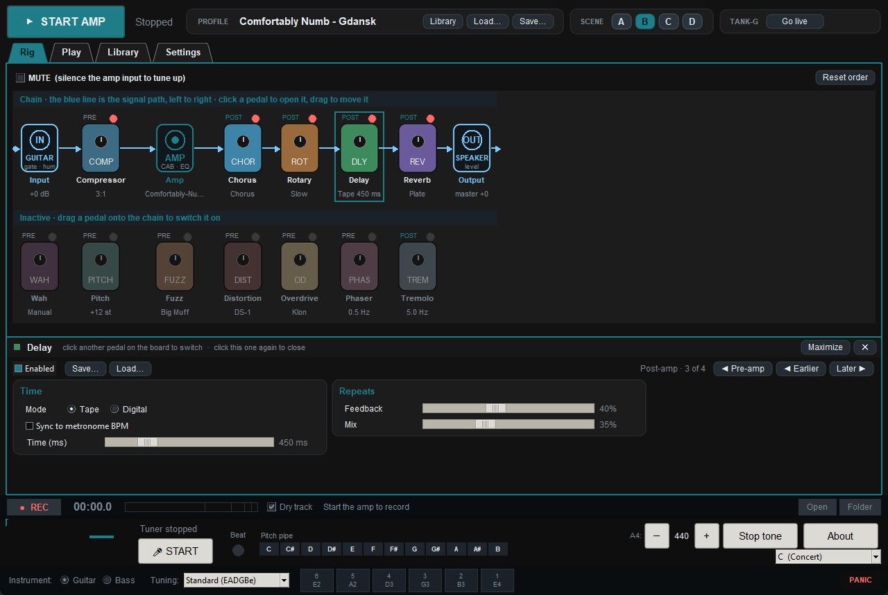

Real-time NAM rig. Every number published.
SoloTone runs Neural Amp Modeler captures through FFT cab IRs, a five-band EQ and a pre/post-amp pedal chain inside a single duplex audio callback — with wet and dry WAV recording and offline re-amping. A 256-sample block is 5.8 ms; the whole chain averages about half of that budget on a modern desktop CPU. No cloud, no account, no telemetry. Describe a tone in words and let an AI build the pedals and scenes for you.

Six tools. One callback.
The tuner, metronome, looper and recorder tap the amp's stream instead of opening their own, so nothing competes for the audio device.
Amp & Cabs
WaveNet NAM inference in pure NumPy (A1/A2, Slimmable). Five FFT overlap-add cab IRs with A/B and blend, five-band biquad EQ, noise gate, hum notches.
Pedals
Ten effects around an AMP marker, so each sits pre- or post-amp. Phaser, tremolo, chorus family, 4× oversampled clippers, soft-knee compressor, room, plate, spring and cloud reverbs.
Looper
Ten layers, 1–60 s, locked to the sample count so layers cannot drift. Records post-chain; per-layer mute and WAV export.
Recorder
Wet and dry mono 32-bit float WAVs, tapped before Master Volume and the click. Re-amp any WAV offline through the current chain.
Tuner
McLeod NSDF pitch detection with mains-hum subtraction. Snaps to the strings of the chosen tuning; 0.07 cent mean error on synthetic tones.
Metronome
Scheduled inside the audio callback: sample-accurate at 30–250 BPM regardless of CPU load.
Describe a tone. Get a rig.
Type “clean-ish intro, crunchy verse, big chorus, a short delay for the solo” and AI tone builds the pedals, EQ, gain and up to four scenes around your amp capture. Use any chat AI for free by copying a prompt and pasting the answer back, or ask Claude directly with your own API key. Every value is clamped to the real range of its control, and one click undoes it.

No cloud. No account. No subscription.
SoloTone runs entirely on your machine and never phones home. The only thing that can leave it is an AI tone request you choose to send, with your own key — what you play stays exactly where you played it.
Like SoloTone? Buy me a coffee.
It's free to use and built in evenings and weekends. A tip on Ko-fi helps keep it going.